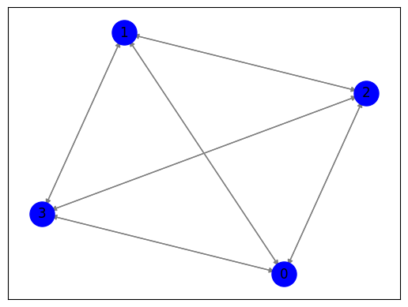

Closeness centrality#
Langkah 1: Crawl data judul berita dan isi berita dari https://tribunjatim.co/#
Aparat Keamanan#
import requests
from bs4 import BeautifulSoup
import pandas as pd
def get_article_content(article_url):
response = requests.get(article_url)
if response.status_code == 200:
soup = BeautifulSoup(response.text, 'html.parser')
article_content = soup.find('div', class_='single-wrap').find_all('p')
content = '\n'.join([p.get_text() for p in article_content])
return content
return ""
def scrape_news_data(start_date, end_date):
base_url = "https://tribunjatim.co/indeks/?dy={}&mt={}&yr={}"
data = []
current_date = start_date
while current_date <= end_date:
url = base_url.format(current_date.day, current_date.month, current_date.year)
response = requests.get(url)
if response.status_code == 200:
soup = BeautifulSoup(response.text, 'html.parser')
news_elements = soup.find_all('h2', class_='entry-title')
for element in news_elements:
title = element.a.text
article_url = element.a['href']
content = get_article_content(article_url)
data.append({'Date': current_date.strftime('%d-%m-%Y'), 'Title': title, 'Content': content})
current_date += timedelta(days=1)
else:
print(f"Failed to fetch data for {current_date.strftime('%d-%m-%Y')}")
return data
from datetime import date, timedelta
start_date = date(2023, 10, 1)
end_date = date(2023, 10, 10)
news_data = scrape_news_data(start_date, end_date)
---------------------------------------------------------------------------
KeyboardInterrupt Traceback (most recent call last)
<ipython-input-1-499eb0a43721> in <cell line: 44>()
42 end_date = date(2023, 10, 10)
43
---> 44 news_data = scrape_news_data(start_date, end_date)
<ipython-input-1-499eb0a43721> in scrape_news_data(start_date, end_date)
28 title = element.a.text
29 article_url = element.a['href']
---> 30 content = get_article_content(article_url)
31
32 data.append({'Date': current_date.strftime('%d-%m-%Y'), 'Title': title, 'Content': content})
<ipython-input-1-499eb0a43721> in get_article_content(article_url)
4
5 def get_article_content(article_url):
----> 6 response = requests.get(article_url)
7 if response.status_code == 200:
8 soup = BeautifulSoup(response.text, 'html.parser')
/usr/local/lib/python3.10/dist-packages/requests/api.py in get(url, params, **kwargs)
71 """
72
---> 73 return request("get", url, params=params, **kwargs)
74
75
/usr/local/lib/python3.10/dist-packages/requests/api.py in request(method, url, **kwargs)
57 # cases, and look like a memory leak in others.
58 with sessions.Session() as session:
---> 59 return session.request(method=method, url=url, **kwargs)
60
61
/usr/local/lib/python3.10/dist-packages/requests/sessions.py in request(self, method, url, params, data, headers, cookies, files, auth, timeout, allow_redirects, proxies, hooks, stream, verify, cert, json)
587 }
588 send_kwargs.update(settings)
--> 589 resp = self.send(prep, **send_kwargs)
590
591 return resp
/usr/local/lib/python3.10/dist-packages/requests/sessions.py in send(self, request, **kwargs)
701
702 # Send the request
--> 703 r = adapter.send(request, **kwargs)
704
705 # Total elapsed time of the request (approximately)
/usr/local/lib/python3.10/dist-packages/requests/adapters.py in send(self, request, stream, timeout, verify, cert, proxies)
484
485 try:
--> 486 resp = conn.urlopen(
487 method=request.method,
488 url=url,
/usr/local/lib/python3.10/dist-packages/urllib3/connectionpool.py in urlopen(self, method, url, body, headers, retries, redirect, assert_same_host, timeout, pool_timeout, release_conn, chunked, body_pos, preload_content, decode_content, **response_kw)
789
790 # Make the request on the HTTPConnection object
--> 791 response = self._make_request(
792 conn,
793 method,
/usr/local/lib/python3.10/dist-packages/urllib3/connectionpool.py in _make_request(self, conn, method, url, body, headers, retries, timeout, chunked, response_conn, preload_content, decode_content, enforce_content_length)
466 # Trigger any extra validation we need to do.
467 try:
--> 468 self._validate_conn(conn)
469 except (SocketTimeout, BaseSSLError) as e:
470 self._raise_timeout(err=e, url=url, timeout_value=conn.timeout)
/usr/local/lib/python3.10/dist-packages/urllib3/connectionpool.py in _validate_conn(self, conn)
1095 # Force connect early to allow us to validate the connection.
1096 if conn.is_closed:
-> 1097 conn.connect()
1098
1099 if not conn.is_verified:
/usr/local/lib/python3.10/dist-packages/urllib3/connection.py in connect(self)
640 )
641
--> 642 sock_and_verified = _ssl_wrap_socket_and_match_hostname(
643 sock=sock,
644 cert_reqs=self.cert_reqs,
/usr/local/lib/python3.10/dist-packages/urllib3/connection.py in _ssl_wrap_socket_and_match_hostname(sock, cert_reqs, ssl_version, ssl_minimum_version, ssl_maximum_version, cert_file, key_file, key_password, ca_certs, ca_cert_dir, ca_cert_data, assert_hostname, assert_fingerprint, server_hostname, ssl_context, tls_in_tls)
781 server_hostname = normalized
782
--> 783 ssl_sock = ssl_wrap_socket(
784 sock=sock,
785 keyfile=key_file,
/usr/local/lib/python3.10/dist-packages/urllib3/util/ssl_.py in ssl_wrap_socket(sock, keyfile, certfile, cert_reqs, ca_certs, server_hostname, ssl_version, ciphers, ssl_context, ca_cert_dir, key_password, ca_cert_data, tls_in_tls)
469 pass
470
--> 471 ssl_sock = _ssl_wrap_socket_impl(sock, context, tls_in_tls, server_hostname)
472 return ssl_sock
473
/usr/local/lib/python3.10/dist-packages/urllib3/util/ssl_.py in _ssl_wrap_socket_impl(sock, ssl_context, tls_in_tls, server_hostname)
513 return SSLTransport(sock, ssl_context, server_hostname)
514
--> 515 return ssl_context.wrap_socket(sock, server_hostname=server_hostname)
/usr/lib/python3.10/ssl.py in wrap_socket(self, sock, server_side, do_handshake_on_connect, suppress_ragged_eofs, server_hostname, session)
511 # SSLSocket class handles server_hostname encoding before it calls
512 # ctx._wrap_socket()
--> 513 return self.sslsocket_class._create(
514 sock=sock,
515 server_side=server_side,
/usr/lib/python3.10/ssl.py in _create(cls, sock, server_side, do_handshake_on_connect, suppress_ragged_eofs, server_hostname, context, session)
1069 # non-blocking
1070 raise ValueError("do_handshake_on_connect should not be specified for non-blocking sockets")
-> 1071 self.do_handshake()
1072 except (OSError, ValueError):
1073 self.close()
/usr/lib/python3.10/ssl.py in do_handshake(self, block)
1340 if timeout == 0.0 and block:
1341 self.settimeout(None)
-> 1342 self._sslobj.do_handshake()
1343 finally:
1344 self.settimeout(timeout)
KeyboardInterrupt:
# Create a pandas DataFrame from the scraped data
df = pd.DataFrame(news_data)
df['Title'] = df['Title'].str.replace('\n', '')
df['Label'] = 'Aparat Keamanan'
df
| Date | Title | Content | Label | |
|---|---|---|---|---|
| 0 | 01-10-2023 | Ide Kreatif Babinsa Koramil Ngetos Ikut Serta ... | Nganjuk – Tribunajatim.co – Babinsa Koramil 1... | Aparat Keamanan |
| 1 | 01-10-2023 | TNI Gadungan Perdaya Kekasih di Nganjuk, Korba... | Nganjuk – Tribunjatim.co – Aparat Kepolisian S... | Aparat Keamanan |
| 2 | 01-10-2023 | BMKG Klarifikasi Kabar Suhu Panas Tembus 42 De... | Surabaya – tribunjatim.co – Badan Meteorologi... | Aparat Keamanan |
| 3 | 01-10-2023 | Peduli Remaja,Bati Komsos Koramil 0804/01 Mage... | Magetan-Bati Komsos Koramil 0804/01 Magetan P... | Aparat Keamanan |
| 4 | 01-10-2023 | Babinsa Koramil Tipe B 0804/01 Magetan Hadiri ... | Magetan. tribunjatim.co-Babinsa Koramil 0804/0... | Aparat Keamanan |
| ... | ... | ... | ... | ... |
| 94 | 10-10-2023 | Sinergitas Antara TNI, Polri Dan Satpol-PP Ama... | Magetan.tribunjatim.co – Koramil Tipe B 0804/0... | Aparat Keamanan |
| 95 | 10-10-2023 | Kodim 0802/Ponorogo Gelar Syukuran HUT ke 78 T... | \n \nPonorogo,-Kodim 0802/Ponorogo hari ini me... | Aparat Keamanan |
| 96 | 10-10-2023 | Babinsa Berikan Pelatihan PBB dan Materi Wawas... | \nMadiun – Satuan Linmas adalah warga masyara... | Aparat Keamanan |
| 97 | 10-10-2023 | Babinsa Dampingi Penyaluran Bantuan Pangan Dar... | \nMadiun – Pemerintah melalui PT Pos Indonesi... | Aparat Keamanan |
| 98 | 10-10-2023 | Peduli Pendidikan Anak Sejak Dini, Babinsa Tan... | Magetan.tribunjatim.co– Danramil 0804/08 Barat... | Aparat Keamanan |
99 rows × 4 columns
# Save the DataFrame to a CSV file
df.to_csv('tribun.csv', index=False)
Langkah 2: Meringkas Fitur Content(Spacy)#
import pandas as pd
from google.colab import drive
drive.mount('/content/drive')
Mounted at /content/drive
data = pd.read_csv("/content/drive/MyDrive/ppw/tugas/data-tugas/tribun.csv")
data
| Date | Title | Content | Label | |
|---|---|---|---|---|
| 0 | 01-10-2023 | Ide Kreatif Babinsa Koramil Ngetos Ikut Serta ... | Nganjuk – Tribunajatim.co – Babinsa Koramil 1... | Aparat Keamanan |
| 1 | 01-10-2023 | TNI Gadungan Perdaya Kekasih di Nganjuk, Korba... | Nganjuk – Tribunjatim.co – Aparat Kepolisian S... | Aparat Keamanan |
| 2 | 01-10-2023 | BMKG Klarifikasi Kabar Suhu Panas Tembus 42 De... | Surabaya – tribunjatim.co – Badan Meteorologi... | Aparat Keamanan |
| 3 | 01-10-2023 | Peduli Remaja,Bati Komsos Koramil 0804/01 Mage... | Magetan-Bati Komsos Koramil 0804/01 Magetan P... | Aparat Keamanan |
| 4 | 01-10-2023 | Babinsa Koramil Tipe B 0804/01 Magetan Hadiri ... | Magetan. tribunjatim.co-Babinsa Koramil 0804/0... | Aparat Keamanan |
| ... | ... | ... | ... | ... |
| 94 | 10-10-2023 | Sinergitas Antara TNI, Polri Dan Satpol-PP Ama... | Magetan.tribunjatim.co – Koramil Tipe B 0804/0... | Aparat Keamanan |
| 95 | 10-10-2023 | Kodim 0802/Ponorogo Gelar Syukuran HUT ke 78 T... | \n \nPonorogo,-Kodim 0802/Ponorogo hari ini me... | Aparat Keamanan |
| 96 | 10-10-2023 | Babinsa Berikan Pelatihan PBB dan Materi Wawas... | \nMadiun – Satuan Linmas adalah warga masyara... | Aparat Keamanan |
| 97 | 10-10-2023 | Babinsa Dampingi Penyaluran Bantuan Pangan Dar... | \nMadiun – Pemerintah melalui PT Pos Indonesi... | Aparat Keamanan |
| 98 | 10-10-2023 | Peduli Pendidikan Anak Sejak Dini, Babinsa Tan... | Magetan.tribunjatim.co– Danramil 0804/08 Barat... | Aparat Keamanan |
99 rows × 4 columns
#install library
!pip install sastrawi
!pip install swifter
!pip install gensim
Collecting sastrawi
Downloading Sastrawi-1.0.1-py2.py3-none-any.whl (209 kB)
?25l ━━━━━━━━━━━━━━━━━━━━━━━━━━━━━━━━━━━━━━━━ 0.0/209.7 kB ? eta -:--:--
━━━━━━━━━━━━━━━━━━━━━━━━━━━━━━━━━━━━━━━╺ 204.8/209.7 kB 6.9 MB/s eta 0:00:01
━━━━━━━━━━━━━━━━━━━━━━━━━━━━━━━━━━━━━━━━ 209.7/209.7 kB 5.7 MB/s eta 0:00:00
?25hInstalling collected packages: sastrawi
Successfully installed sastrawi-1.0.1
Collecting swifter
Downloading swifter-1.4.0.tar.gz (1.2 MB)
━━━━━━━━━━━━━━━━━━━━━━━━━━━━━━━━━━━━━━━━ 1.2/1.2 MB 23.9 MB/s eta 0:00:00
?25h Preparing metadata (setup.py) ... ?25l?25hdone
Requirement already satisfied: pandas>=1.0.0 in /usr/local/lib/python3.10/dist-packages (from swifter) (1.5.3)
Requirement already satisfied: psutil>=5.6.6 in /usr/local/lib/python3.10/dist-packages (from swifter) (5.9.5)
Requirement already satisfied: dask[dataframe]>=2.10.0 in /usr/local/lib/python3.10/dist-packages (from swifter) (2023.8.1)
Requirement already satisfied: tqdm>=4.33.0 in /usr/local/lib/python3.10/dist-packages (from swifter) (4.66.1)
Requirement already satisfied: click>=8.0 in /usr/local/lib/python3.10/dist-packages (from dask[dataframe]>=2.10.0->swifter) (8.1.7)
Requirement already satisfied: cloudpickle>=1.5.0 in /usr/local/lib/python3.10/dist-packages (from dask[dataframe]>=2.10.0->swifter) (2.2.1)
Requirement already satisfied: fsspec>=2021.09.0 in /usr/local/lib/python3.10/dist-packages (from dask[dataframe]>=2.10.0->swifter) (2023.6.0)
Requirement already satisfied: packaging>=20.0 in /usr/local/lib/python3.10/dist-packages (from dask[dataframe]>=2.10.0->swifter) (23.2)
Requirement already satisfied: partd>=1.2.0 in /usr/local/lib/python3.10/dist-packages (from dask[dataframe]>=2.10.0->swifter) (1.4.1)
Requirement already satisfied: pyyaml>=5.3.1 in /usr/local/lib/python3.10/dist-packages (from dask[dataframe]>=2.10.0->swifter) (6.0.1)
Requirement already satisfied: toolz>=0.10.0 in /usr/local/lib/python3.10/dist-packages (from dask[dataframe]>=2.10.0->swifter) (0.12.0)
Requirement already satisfied: importlib-metadata>=4.13.0 in /usr/local/lib/python3.10/dist-packages (from dask[dataframe]>=2.10.0->swifter) (6.8.0)
Requirement already satisfied: python-dateutil>=2.8.1 in /usr/local/lib/python3.10/dist-packages (from pandas>=1.0.0->swifter) (2.8.2)
Requirement already satisfied: pytz>=2020.1 in /usr/local/lib/python3.10/dist-packages (from pandas>=1.0.0->swifter) (2023.3.post1)
Requirement already satisfied: numpy>=1.21.0 in /usr/local/lib/python3.10/dist-packages (from pandas>=1.0.0->swifter) (1.23.5)
Requirement already satisfied: zipp>=0.5 in /usr/local/lib/python3.10/dist-packages (from importlib-metadata>=4.13.0->dask[dataframe]>=2.10.0->swifter) (3.17.0)
Requirement already satisfied: locket in /usr/local/lib/python3.10/dist-packages (from partd>=1.2.0->dask[dataframe]>=2.10.0->swifter) (1.0.0)
Requirement already satisfied: six>=1.5 in /usr/local/lib/python3.10/dist-packages (from python-dateutil>=2.8.1->pandas>=1.0.0->swifter) (1.16.0)
Building wheels for collected packages: swifter
Building wheel for swifter (setup.py) ... ?25l?25hdone
Created wheel for swifter: filename=swifter-1.4.0-py3-none-any.whl size=16505 sha256=22e7733183a9121dbb002fa1eecb5ee413ea203d0fc3734df0d16afd33e2f661
Stored in directory: /root/.cache/pip/wheels/e4/cf/51/0904952972ee2c7aa3709437065278dc534ec1b8d2ad41b443
Successfully built swifter
Installing collected packages: swifter
Successfully installed swifter-1.4.0
Requirement already satisfied: gensim in /usr/local/lib/python3.10/dist-packages (4.3.2)
Requirement already satisfied: numpy>=1.18.5 in /usr/local/lib/python3.10/dist-packages (from gensim) (1.23.5)
Requirement already satisfied: scipy>=1.7.0 in /usr/local/lib/python3.10/dist-packages (from gensim) (1.11.3)
Requirement already satisfied: smart-open>=1.8.1 in /usr/local/lib/python3.10/dist-packages (from gensim) (6.4.0)
# Impor pustaka spaCy
import spacy
# Memuat model bahasa Inggris spaCy
nlp = spacy.load("en_core_web_sm")
# Berikan berita yang ingin diringkas
berita = data['Content'].iloc[4]
# Analisis teks menggunakan spaCy
doc = nlp(berita)
# Meringkas teks dengan mengekstrak kalimat-kalimat utama
kalimat_utama = [kalimat.text for kalimat in doc.sents]
ringkasan = " ".join(kalimat_utama[:5]) # Mengambil dua kalimat pertama sebagai ringkasan
# Cetak ringkasan
print(ringkasan)
Magetan. tribunjatim.co-Babinsa Koramil 0804/01 Magetan Serda Untung menghadiri pelaksanaan kegiatan Pelayanan Program KB dalam rangka Hari Kontrasepsi sedunia dengan jumlah peserta 9 orang bertempat di RSIA Samudra Husada jalan Samudra Kelurahan Bulukerto Kec. Magetan Kab. Magetan (01 Oktober 2023)
Kegiatan Pelayanan Program KB dalam rangka
Langkah 3: TF IDF#
import nltk
nltk.download('punkt')
from nltk.tokenize import sent_tokenize
from sklearn.feature_extraction.text import TfidfVectorizer
[nltk_data] Downloading package punkt to /root/nltk_data...
[nltk_data] Package punkt is already up-to-date!
kalimat = nltk.sent_tokenize(ringkasan)
tfidf_vectorizer = TfidfVectorizer()
tfidf_matrix = tfidf_vectorizer.fit_transform(kalimat)
terms = tfidf_vectorizer.get_feature_names_out()
for i, sentence in enumerate(kalimat):
print(f"\nKalimat {i+1}: {sentence}")
for j, term in enumerate(terms):
tfidf_value = tfidf_matrix[i, j]
if tfidf_value > 0:
print(f"{term}: {tfidf_value:.4f}")
Kalimat 1: Magetan.
magetan: 1.0000
Kalimat 2: tribunjatim.co-Babinsa Koramil 0804/01 Magetan Serda Untung menghadiri pelaksanaan kegiatan Pelayanan Program KB dalam rangka Hari Kontrasepsi sedunia dengan jumlah peserta 9 orang bertempat di RSIA Samudra Husada jalan Samudra Kelurahan Bulukerto Kec.
01: 0.1380
0804: 0.1751
babinsa: 0.1751
bertempat: 0.1751
bulukerto: 0.1751
co: 0.1751
dalam: 0.1380
dengan: 0.1751
di: 0.1751
hari: 0.1751
husada: 0.1751
jalan: 0.1751
jumlah: 0.1751
kb: 0.1380
kec: 0.1751
kegiatan: 0.1380
kelurahan: 0.1751
kontrasepsi: 0.1751
koramil: 0.1751
magetan: 0.0914
menghadiri: 0.1751
orang: 0.1751
pelaksanaan: 0.1751
pelayanan: 0.1380
peserta: 0.1751
program: 0.1380
rangka: 0.1380
rsia: 0.1751
samudra: 0.3502
sedunia: 0.1751
serda: 0.1751
tribunjatim: 0.1751
untung: 0.1751
Kalimat 3: Magetan Kab.
kab: 0.8865
magetan: 0.4626
Kalimat 4: Magetan (01 Oktober 2023)
Kegiatan Pelayanan Program KB dalam rangka
01: 0.3063
2023: 0.3886
dalam: 0.3063
kb: 0.3063
kegiatan: 0.3063
magetan: 0.2028
oktober: 0.3886
pelayanan: 0.3063
program: 0.3063
rangka: 0.3063
Langkah 4: Cosine Similarity#
from sklearn.metrics.pairwise import cosine_similarity
import networkx as nx
import matplotlib.pyplot as plt
cosine_similarities = cosine_similarity(tfidf_matrix, tfidf_matrix)
for i in range(len(kalimat)):
for j in range(i+1, len(kalimat)):
similarity = cosine_similarities[i][j]
print(f"Similarity Kalimat {i+1} dan Kalimat {j+1}: {similarity:.4f}")
Similarity Kalimat 1 dan Kalimat 2: 0.0914
Similarity Kalimat 1 dan Kalimat 3: 0.4626
Similarity Kalimat 1 dan Kalimat 4: 0.2028
Similarity Kalimat 2 dan Kalimat 3: 0.0423
Similarity Kalimat 2 dan Kalimat 4: 0.3145
Similarity Kalimat 3 dan Kalimat 4: 0.0938
similarity_df = pd.DataFrame(cosine_similarities, columns=range(len(kalimat)), index=range(len(kalimat)))
similarity_df
| 0 | 1 | 2 | 3 | |
|---|---|---|---|---|
| 0 | 1.000000 | 0.091364 | 0.462637 | 0.202766 |
| 1 | 0.091364 | 1.000000 | 0.042268 | 0.314529 |
| 2 | 0.462637 | 0.042268 | 1.000000 | 0.093807 |
| 3 | 0.202766 | 0.314529 | 0.093807 | 1.000000 |
Langkah 5: Graph#
G = nx.DiGraph()
for i in range(len(cosine_similarities)):
G.add_node(i)
for i in range(len(cosine_similarities)):
for j in range(len(cosine_similarities)):
similarity = cosine_similarities[i][j]
if similarity > 0.02 and i != j:
G.add_edge(i, j)
pos = nx.spring_layout(G)
nx.draw_networkx_nodes(G, pos, node_size=500, node_color='b')
nx.draw_networkx_edges(G, pos, edge_color='gray', arrows=True)
nx.draw_networkx_labels(G, pos)
plt.show()

Langkah 6: Closeness Centrality#
closeness_centrality = nx.closeness_centrality(G)
sorted_closeness = sorted(closeness_centrality.items(), key=lambda x: x[1], reverse=True)
print("\nSorted Closeness Centrality:")
for node, closeness in sorted_closeness:
print(f"Node {node}: {closeness:.4f}")
Sorted Closeness Centrality:
Node 0: 1.0000
Node 1: 1.0000
Node 2: 1.0000
Node 3: 1.0000
print("\nNode Tertinggi dengan Kalimat:")
for node, closeness in sorted_closeness[:3]:
top_sentence = kalimat[node]
print(f"Node {node}: Closeness Centrality = {closeness:.4f}")
print(f"Kalimat: {top_sentence}\n")
Node Tertinggi dengan Kalimat:
Node 0: Closeness Centrality = 1.0000
Kalimat: Magetan.
Node 1: Closeness Centrality = 1.0000
Kalimat: tribunjatim.co-Babinsa Koramil 0804/01 Magetan Serda Untung menghadiri pelaksanaan kegiatan Pelayanan Program KB dalam rangka Hari Kontrasepsi sedunia dengan jumlah peserta 9 orang bertempat di RSIA Samudra Husada jalan Samudra Kelurahan Bulukerto Kec.
Node 2: Closeness Centrality = 1.0000
Kalimat: Magetan Kab.